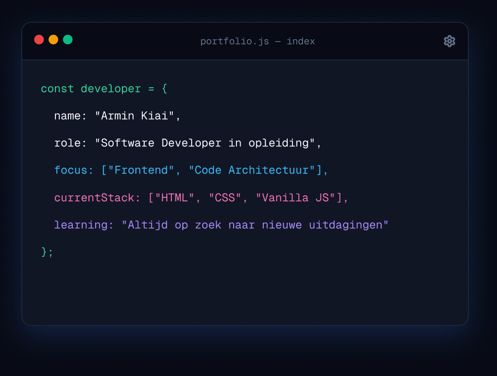

MOMENTEEL LEER IK: HTML & CSS
Hallo, ik ben Armin. Software Developer in opleiding.
Ik ben een Software Development-student die zichzelf stap voor stap ontwikkelt tot software developer. In dit portfolio laat ik mijn projecten, vaardigheden en ontwikkeling tijdens mijn opleiding zien.
Bekijk mijn projecten Over mij